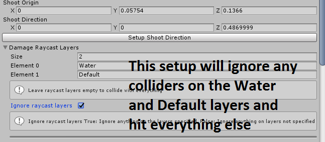
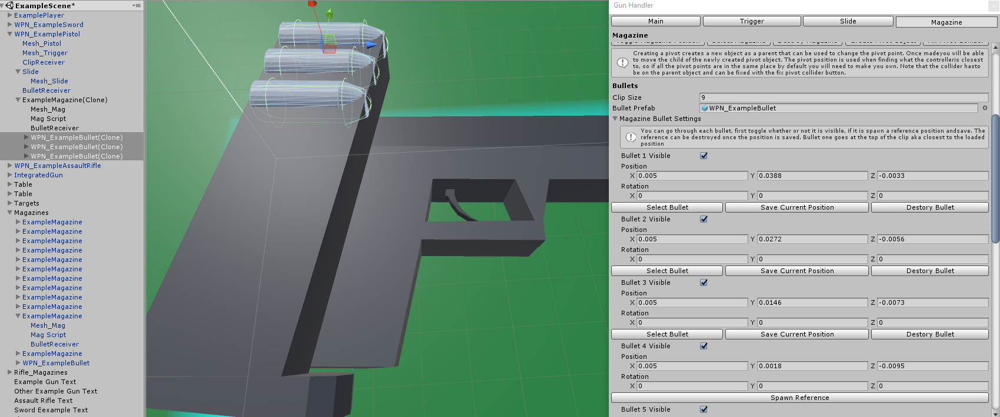

In the scene you must have a SteamVR camera rig with the VRInteractor attached to either or both controller objects. It should add all the scripts it needs, the only thing you might want to change is the sphere collider radius that is a public variable of the interactor. default is 0.12.
The Interactor script needs to be attached to either or both controllers in order to pick up anything. You are able to configure exactly what you want each controller button to do from here.
Action Settings:
The name of the Actions (ACTION, PICKUP_DROP) corrospond to the method name in any other script attached to the same object. Open VRDefaultControls.cs and VRSpawnItemControls.cs to see examples of how this should look. The method name will be called when the key is pressed and the method name plus Released will be called when that key is released. You will be able to use this system to make your own control scheme and custom buttons. The default weapon interactor controls are in the VRDefaultControls.cs script and must be attached for the standard actions of picking up and shooting weapons.
Weapon Reference:
The weapon reference can be used to attached a weapon to a controller at startup. You can use this in conjunction with setting Pickup_Drop buttons to none which will lock the weapon to your hand permanently.
Step 1: Setting Up The Model.
The first thing you need to do is get your weapon model in the correct format. The Example pistol is your reference for this. All the moving parts have to be separate meshes and all children of the same game object. If you have a weapon that is all one mesh it can still be setup and will work it just won't have any moving parts. If they are separate meshes but are all combined when importing into unity check you modeling programs export settings.
Step 2: Open The Wizard
Once you have a model that is in structure similar to the example pistol you can start the wizard for initial setup. That's in the editor menu under;
VR Weapon Interactor/Weapon Wizard
Step 3: Assign Weapon Parts
The weapon wizard is for assigning a reference to the different parts of the weapon. Even if
there is only one mesh it has to be a child to an empty object, this
is for two reason's, the first is all saved positions and rotations
will be local to that object and second, two colliders are required,
one for the hitting the environment and another trigger collider for
being picked up by the controller.
Make sure you drag your weapon into the scene before assigning it to the wizard. Assign
each part and choose where to save the magazine prefab (After you setup you will be able to drag
or spawn instances of this standalone prefab for additional magazines that will all work with any weapon
that has the same magazine id). The gun model should be the parent
object to all the mesh objects. Leaving the magazine blank will create an integrated magazine, primarily for revolver like pistols as
well as alien pistols with no magazine. If it is an external magazine
it is going to be saved as a prefab so it can be instantiated later,
you just need to choose where that prefab should be saved and what
it's called. Default is the name of the mesh. The Id is for matching
magazines and weapons if you have a different gun with a different
magazine change the id so you can't load the wrong magazine into the
wrong gun. Once thats all done hit setup.
Step 4:
With that done the weapon editor should show up. This is where you can customize all the moving parts and prefab references. At this point you should be able to run the game and pick up the weapon, nothing will move yet, the held position will likely be wrong and it won't shoot but you should be able to pick it up. :)

The bullet wizard is used for making the bullet prefab, just drag your bullet mesh into the scene open the bullet wizard from VR Weapon Interactor/Bullet Wizard (same place as the weapon wizard), enter the reference and bullet id (the bullet id here has to match the bullet id given in the gun or magazine to load) and click setup. It will ask you to setup the held position (check weapon held position for info on this), once done check the collider size looks right and save the bullet as a prefab in your project.
after setup should it look like this with a rigidbody and collider on the parent
You can access the weapon editor from any of the reference mesh renderer objects. The editor is split into four different tabs; Main, Trigger, Slide and Magazine.
Main Section
Weapon position:
The weapon position in the main section of the editor is the local position the pistol body will be relative to it's parent.
Weapon Held Position:
Use this window to instantiate a reference controller and position the weapon model relative to it. The model is made to be a child of the reference controller in the hiearchy, this means you can move the controller object around the scene to get a better view of the position, the controllers position in the scene has no effect. All that is happening here is the local position and rotation is being saved as when you pick up an item it will be made a child of the actual controller. Once done hit save and close the window.
Two Handed Weapon:
You can add a second held position by clicking the Add second held collider button, this will add a new trigger collider as a child of the weapon, move this to where you want to grab with the second hand. An example of this is in the assault rifle in the example scene.
Firing Mode:
You can choose how the weapon will fire from three modes, semi automatic where the weapon will fire once per each pull of the trigger and load the next bullet if avaiable, fully automatic where the gun will fire at the given fire rate (in seconds the delay between shots, default 0.1 seconds) for as long as the trigger is held down and there are bullets available and pump or bolt action where each bullet has to be manually loaded by pulling the slide (only works if you have a slide).

Damage:
When you shoot something a message is sent to the object that was hit calling the method Damage that takes DamageInfo as a parameter on or as a parent of the object hit, damage is part of that message and can be used to take HP of your target. To modify this you can open the VRGunHandler.cs script and go down to the FireRaycast() method. Near the bottom of this method is the line
hit.transform.SendMessageUpwards("Damage", damageInfo, SendMessageOptions.DontRequireReceiver);
You can modifiy this line to send a different method name or change the parameter. You can also modify the DamageInfo.cs script to send different variables. To see how send message works check here. by default the receiving object should have this method to receive.
Public void Damage(DamageInfo info) {}
Shoot Direction:
This must be setup to shoot anything, two sphere should be spawned when you click setup, you can select them both at first and move them to the end of the barrel of the gun, right where the bullet should come out, once both are there just select the destination sphere and drag it away perpedicular to the barrel, mimicking the direction the bullet should go. The origin sphere will be use a the origin of the raycast and the difference between the origin and destination will be used for the direction of the raycast.
You can set the Shot mode to single shot, shotgun and machine gun each of which can can be configured and tested using the "Show test ray" button
Damage Raycast Layers:
You can assign the names of layers you either want to ignore or that you only want to hit. Useful if you have trigger colliders you want to be ignored when shooting.
Hover:
All intractable items will have a hover section, here you can chose exactly how you want it to work, by default it will use an unlit shader for the hover. You can chose a different shader or you can switch to two materials. Leaving the default shader blank will have it use the shader or material the mesh renderer has at startup. You can also chose a sound to play on entering and leaving hover.
Bullet Decal Prefab:
The bullet decal prefab will be instantiated on the surface that was shot. You can use the BulletDecalExample prefab in the Example folder for reference on how a decal should look, or if you want a bit more control you can use the DecalChanger prefab as the reference in the weapon editor then modifiy the references on the DecalChanger script to pair decal prefabs with tags. An example of this is set up already with the two top right most targets that are tagged as Respawn and Finish and the M9 is using the DecalChanger as an example.
Muzzle Flash And Smoke Prefab:
Once the muzzle flash prefab is assign you can access muzzle flash settings to spawn an instance of the prefab and position it how you like. The gun handler script will only take care of instantiating the prefab something on the object will have to take care of getting rid of it. As an example the DestroyIn script can be attached where you just set the time in seconds until the object is destroyed.
Bullet Prefab:
This is where you should put the prefab saved from the bullet wizard earlier. The bullet doesn't need a rigidbody and collider but without one it will just spawn frozen, once it is assigned you will be able to set it's loaded position and the ejection direction.
Spent Bullet Prefab
If you have a spent bullet mesh you will want to add it into the scene add a rigidbody, collider and DestroyIn script, set the script time to around 5 seconds and make sure the scale matches the bullet prefab. If you don't have a spent mesh you can drag an instance of the bullet prefab, add the DestroyIn script, then remove the InteractiveItem and trigger collider from the child object, then save this as a new prefab. If you don't want spent casings to be ejected feel free to leave this field blank.
Bullet Loaded Position And Bullet Ejection:
When you reference a bullet prefab in the Main section of the gun editor a drop down called Bullet settings will appear, here you can set the loaded position by clicking setup position which will spawn an instance of the prefab, move it into the correct position and save.
Bullet ejection is set up the same way the shoot direction is setup only the origin position will always be the bullet loaded position you just set, dont move the origin sphere as changes in it's position will be ignored. The further away you put the direction sphere the more force will be applied when ejecting the bullet. Use the example pistol as reference.
Bullet Receiver:
The bullet receiver is used for loading bullets directly into the gun, skipping the magazine, it should be placed somewhere near to where the bullet will sit, but is totally up to you exactly how big it is or where it can go.
Slide Section
If the slide is left blank the bullet will be loaded as soon as the magazine goes in, otherwise you will have to pull the slide to load the bullet from the magazine. It can also be used to eject loaded bullets if pulled when already loaded. The slide can be pulled when held and is clamped between the default and pulled position, when not held it will always move back to the default position. When the weapon is fired and Animate When Firing is true it will lerp back and forth to give room for the ejected shell. Move it to the default position hit set current to default, then move it back to the pulled position and set current to pulled use the toggle button to move the slide between the two positions until you are happy with it. You can also set SecondHeldPosition to true that will allow you to hold the slide like a shotgun, there is an example of this leaning next to the assault rifle table.

Pivot Point:
You will see the option to create a pivot point on the slide and magazine options, this is important as the pivot point is used when finding the closest interactable item to the controller, to see the pivot point on the currently selected object make sure the option just to the right of the transform controls in the top left says Pivot and not Center, Often when importing a model the pivots of all the meshes will be set to local zero, if this is the case you will need to add a pivot point. Creating one will add a gameobject as the parent of the current slide and move the collider onto that level leaving the mesh renderer as the child. You can now move the mesh renderer object so the parent pivot is over the centre of the mesh. You might notice the box collider on the parent doesn't move with which is where the “Fix pivot collider” button comes in. Click that to move the collider back over the mesh renderer. See the ExamplePistol for reference on how this looks when setup.
Trigger Section
If the trigger is left blank it will still shoot but there will be no visual representation of the trigger. The trigger will rest in the default position and move to the pulled position as you pull the trigger on the controller when the weapon is held. Move it to the default position hit "set current to default", then move it back to the pulled position and "set current to pulled" use the toggle button to switch between positions until you are happy with it. Unlike the slide and magazine where the pivot is used when grabbing them, the trigger only has the option to create a pivot object so you can place the pivot in a hinge position just to make it a little easier to set the default and pulled positions.
Magazine Section
Magazine Start Loaded:
Start loaded will instantiate a loaded magazine at start up, making the gun ready to fire right away. You can of course also drag the saved magazine prefab into the scene and start with an empty gun.
Magazine Prefab:
If provided this will be the magazine mesh from the weapon wizard. You can click spawn magazine to instantiate an instance and start configuring. Closing the editor will destroy the instance of the magazine. When starting there shouldn't be an instance of the magazine as a child of the gun.
Auto Load:
Auto load will push the magazine into the gun when left hanging in the slot, when disabled gravity will be used so you have to hold the gun upside down for it to slide into the slot. When true the speed is how quickly the magazine will be loaded.
Infinite Ammo:
The first option once the magazine is instantiated is infinite ammo, this will allow the gun to keep firing as long as the magazine is loaded. If you would like to save a new magazine prefab but with infinite ammo, you should drag a new instance of the magazine prefab, give it a different name (maybe including the word infinite), then open the weapon editor or click delete magazine button if it's already open and spawned, then change the magazine prefab reference with the new infinite prefab, spawn it and tick infinite ammo, this will save the magazine prefab. Then just make sure the magazine prefab reference is the one you want this weapon to spawn by default.
Magazine Id:
The magazine id can be set here or on the magazine script in the magazine prefab object. Setting the id in the editor will also set it for the weapon. If the id doesn't match you will not be able to load the magazine.
Magazine Held Position
This works just like all the other held position editors, check the example pistol magazine for a reference on how this position can look.
Magazine Position:
Similar to setting the slide, the default magazine position is the loaded position and the entry is just before it enters the slot. The magazine will slide along these two points when being loaded.
Clip Size:
The clip size is the maximum amount of bullets the magazine can hold, this value is ignored if infinite ammo is true.
Bullet Prefab:
Setting the bullet prefab here or on the main panel will update the other.
Magazine Bullet Settings:
This drop down is used to visualize the bullets in the magazine. You can individually chose which bullet is going to be visible, if it is you can spawn a reference and place where it should appear relative to the magazine. Make sure to destroy the instance or close the menu before starting the player. Warning: Lowering the clip size will erase all bullet position data, so make sure you are happy with the clip size before spending ages positioning all the bullets.
Magazine Bullet Receiver:
Works just the same as the gun bullet receiver, it is used for loading loadable bullets back into the magazine. Make sure to hit save after moving the receiver collider to update the prefab reference.

Clip Receiver:
The clip receiver is for loading the magazine into the gun, it should be placed somewhere between the magazine default position and entry position, some tweaking and testing may be necessary as to close to the default position and it will just snap to loaded and to far away it will get stuck when trying to remove it. Check the example weapons for reference.
Integrated Magazine:
All the options from a normal magazine with the exception of those relating to removing and adding.
Setting Up A New Inventory
Create a new Gameobject and add the VRInventory script. Reference the camera the inventory will be attached to, this inventory object will move with the camera referenced. Click the Add New Slot button and add a collider then set it to be a trigger. The slot object will be added as a child to the inventory object, and can be moved locally to it. At this point you can use one of the two examples (HolsterExample and ClipSpawnerExample) or create your own. Now go to the item you want to make inventoriable and on the same object as the VRInteractableItem add the VRInventoryItem script. On this script you can add the method name that will be called on the slot object. The id is an optional parameter that can be used in the slot. An example of this is the holster example that uses the id to chose what it can accept.
Saving Weapon Prefab:
Make sure to only apply prefab changes to the weapon as a whole when there isn't a magazine, bullet or origin destination spheres. As they shouldn't be included in the prefab and will cause problems. Simply closing the editor will clean up the mentioned objects and allow you to apply changes to the weapon prefab.
Interactable Item:
All weapon parts (GunHandler, Slide, Magazine) all inherit from the InteractableItem class, this can be used on it's own as is exampled with the sword next to the button. The Held Movement and Rotation Speed is the max speed the item will move to the held position, this can be slowed down at run time if you wanted to add some kind of limit or weight to objects. The break limit is how far from the object the controller can be until it is auto dropped. Toggle To Pickup when set to true will allow you to pickup an item without holding down the pickup key, when set to false the item will be dropped as soon as you release the pickup button. Use the Setup Held Position to spawn a reference controller and set the local positon and rotation that should be used.

(Something go wrong and it's not mentioned here? Email me at sam@massgames.co.uk and I'll fix it and add it)